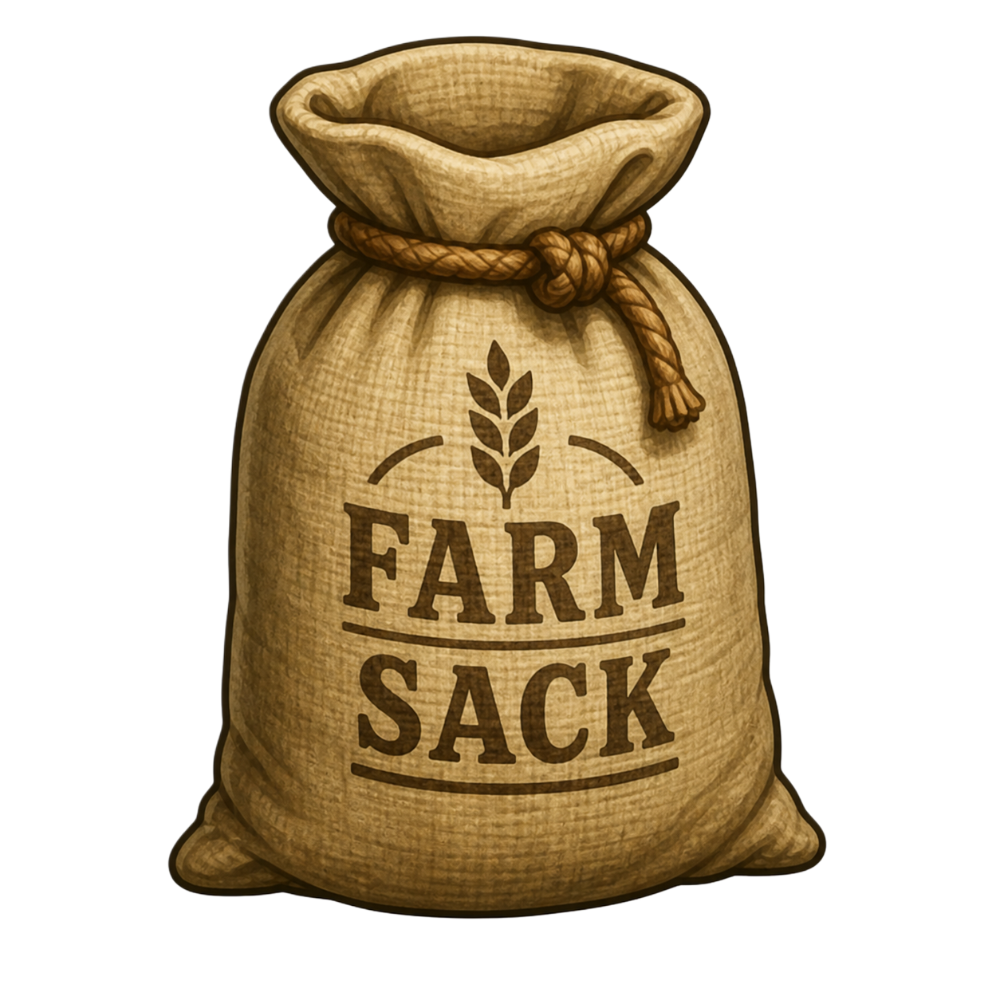

Your farm syncs to the cloud — log in from any device with the same email to keep playing.
Buy seeds to plant, and trees / decor / animals / buildings to place on your farm.
Every brew rolls one of these outcomes:
Named discoveries go into the Book AND become plantable on your farm — flip the seed strip toggle. Wild discoveries are Book-only.
Pick two seeds. Same seed = pure splice. Different seeds = cross-breed (Tier 4 only).
Set conditions. Each slot (Water / Light / Soil / Catalyst) has options that raise the rarity score and instability.
Pay + brew. Cost = seed splice fee + slot costs. Brew time depends on your tier (60m → 30m).
Claim when ready. The brew rolls a possible mutation per the section above.
Upgrade tiers for more slots, faster brews, and at Tier 4: cross-breeding two different seeds.
You're at Lv 20. The new Reset Farm button on the toolbar (between Greenhouse and Horse) lets you wipe the run and start fresh — but you keep a permanent bonus.
You earn +1% permanent boost to coins + XP for every 1,000,000¢ you have banked at reset. Bonuses stack across resets, so the more you save before pressing Reset, the bigger the head start.
Tip: if you want a meaningful jump, bank coins before you reset. 25M = +25%, 100M = +100%, etc.
You'll lose your buildings, animals, crops, level, and coins. You keep your achievements, leaderboard stats, and every prestige bonus you've ever earned.
Time to grow the farm! Open the Shop → Upgrades tab and try Expand Play Area — each press adds a one-tile ring around your fence so you can plow more, plant more, and earn faster.
You can also drag the Buy Land tool over individual grass tiles for finer control.
Your new Crop Farmer needs seeds to plant. Drop a Seed Container anywhere on the map and stock it with seeds — until then they'll only harvest and water.
Open the shop's Buildings tab to grab one (600¢).
You can now mutate seeds! Click your greenhouse anytime to walk over and open the greenhouse:
The Big Red Barn just unlocked! Place one to open a fenced animal pen south of it. Here's the workflow:
Click an animal anytime for its action menu.
Time to turn livestock into coin. The Slaughterhouse sits inside the animal pen and pays out meat coins for any qualifying animal.
You can now mutate seeds for big XP + coin rewards. Build the Greenhouse from Shop → Buildings, then click it to open the lab:
Three new buildings just opened up — together they let you hire farmhands and automate the busywork:
Crop Farmer slots open at Lv 18 / 21 / 24. Arborist at 19, Animal Keeper at 20.
Now that you can buy a Dog, the surrounding hills aren't quite so empty — coyotes will occasionally creep onto the farm.
A new building, the Grain Silo, just unlocked alongside a brand-new crop, Animal Feed. Together they buff every farm animal you raise.
Keep planting feed to keep the bonus rolling.
You unlocked these new items:
Everything you've planted or placed on the world.
A quick reference for the basics. Hover anything in-game for live tooltips.
Click a key cell to rebind. Press Esc to cancel; press a single key to bind. Tools 1-7 default to digits.
Drag the toolbar, quest panel, or dismount banner to reposition them while edit mode is on.
Wiping resets this profile's farm to a fresh start. Logging out keeps your save in the cloud.
Build a fenced pen attached to this Big Red Barn? Choose Add Pen to enclose a 6×6 yard for animals; choose Barn Only to keep this barn standalone (decorative — no animals).